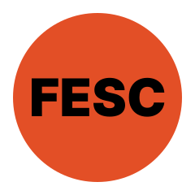
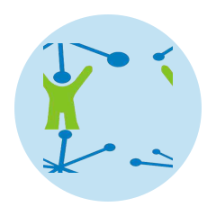
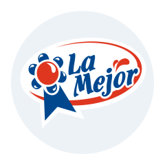

Técnico Informatico 🚀
📣 Mantenimiento Preventivo y Correctivo a Equipos de Computo, Arquitecto Frotend (HTML, CSS y JavaScript) y Trading Apacionado... 🎖️
Fan de Batman y una buena ☕ taza de café ☕ por la mañana.
Con un alto nivel en el desarrollo de actividades productivas relacionadas con el ensamblaje, mantenimiento, actualización, instalación y configuración de equipos de cómputo; manejo de Software Ofimático y Herramientas Tics.
Desde el 2014 tengo experiencia en el Desarrollo Web como Freelance, orientado a la Arquitectura Frontend; maquetación y optimización para el buen posicionamiento y rendimiento de sitios Web e Interfaces de Usuario.
Las tecnologias que manejo son:
Contacto
-
🧔 Davis Miguel Quintero Mantilla.
-
📌 Naci en Colombia, Junio 01 de 1987.
-
🏡 Vivo en Cúcuta, Norte de Santander.
-
📬 davkintero@gmail.com.
-
📞 300-6789318.
Educacion
-

2014, Frontend Freelance.
-
2008, Técnico en Sistemas.
-
2006, Bachiller Academico.
Servicios
-
Soporte a Equipos de Computo.
-
Diseño y desarrollo de Sitios Web.
-
Diseño de Pautas Publicitarias.
-
Ecommerce.
-
Posicinamiento SEO.
Experiencia
-

FESC (Actual)
Auxiliar de Gestión Técnologica; solución de problemas informaticos al área administrativa y educativa.
-

NETSERVICE (2015 - 2022)
Lider de Proyectos; diseño y ejecucion de proyectos de CCTV y Cableado Estructurado.
-
Corprodinco (2013 - 2014)
Auxiliar de Sistemas; solución de problemas informaticos al área administrativa y adminitración del aula tecnologica del convenio Telefonica.
-

Pasteurizadora La Mejor (2011 - 2012)
Auxiliar de Sistemas; solución de problemas informaticos al área administrativa, backup de servidores y chequeo de CCTV.